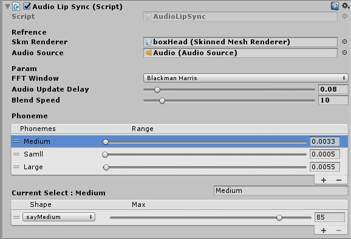
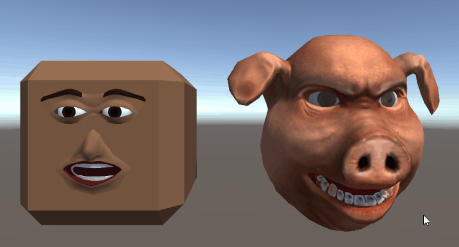

之前找到一个模型带了口型的BlendShape，于是到插件商店里看了一下，是否有好用的对口型插件，看了一圈居然都是手动在时间轴上面K帧，我只能说MDZZ，不被美术打死才怪，于是去查了下目前主流的解决方案，最终自己实现了一个根据音频频谱对口型的方法。
目前游戏内对口型主流的几种方法：
- 面部表情捕捉
- 语音内容识别
- 语音频谱识别
1对于大厂来说，工作流完善，有从动作到表情捕捉的全套解决方案，硬件软件设备齐全，直接就通过捕捉来做了，对于我们这种蹒跚学步的小厂和个人来说完全没有办法考虑。
2目前有两种一种是提前解析音频内容生成时间轴，时间轴驱动动画，另一种是实时语音解析驱动，需要第三方SDK，看了OVR的SDK，用了C++库，且在我的机器上各种编辑器崩溃，Github上有Google语音识别的，需要联网也不考虑
3直接实时抓取频谱，匹配特殊频谱来驱动动画
之前似乎记得巫师制作人说是根据语音动态生成的口型，于是乎决定就这个方向了，动态的毕竟灵活
一开始想自己解析语音内容生成元音时间轴，这样可以保证正确，并且可以通过后期手动修正，还可以添加额外的动画。通过参考Github开源项目里的离线语音识别，发现没有一个能做到较高的正确率，商店里有一个UnityBridge看视频似乎识别率挺高，但是40刀的价格完全不值，介绍里说他用的Microsoft Speech Recognition，于是我也去看了下，但是自己调出的效果差得远，想到多语言基本没办法搞定，很是沮丧。
又想到找些SpeechToText的项目自己再根据文本来生成时间轴，这样在线的SDK也可以使用了，看了几个的SDK，一是接入麻烦二十都是只有单句话的返回，
连时间戳都没得，还得自己验证时间轴…
于是乎就这样试试看看过了三天还是什么都没搞定，一怒之下直接解析频谱得了，撸了半小时找了几个模型来测了下，效果居然意外的的好。
然后一拍脑袋，日式动画片里口型不都是这么个么，节奏把握好，根本不会觉得突兀啊 ，鄙视了自己许久重构了一个新的 。
基本思路：
- 实时解析频谱,
Unity有现成的接口AudioSource.GetSpectrumData - 音元配置映射，单个音元可以驱动多个动画，设定权重，同一时间只响应一个音元
- 权重计算，根据用户配置筛选特定的样条进行计算，叠加音元的权重
- 平滑插值，通过BlendShape驱动动画
编辑器界面:

效果预览：
